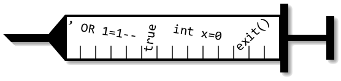

Defining Code and Noncode Injection Attacks
Overview
Code injections occur when untrusted input to an application gets used as code in that application's output. This project compares existing definitions of code injections and presents new definitions that resolve some of the problems (false positives and negatives) with existing definitions. Analysis of the new definitions provides insights into the requirements for mechanisms to mitigate code injections. The project also considers attacks based on injecting noncode, rather than code, symbols.
Contributors
Cagri Cetin
Donald Ray
Publications
Slides from a talk Cagri gave at the Florida Center for Cybersecurity conference in April, 2017.
Slides from a talk Donald gave at the annual Florida Center for Cybersecurity conference in October, 2015.
Defining Injection Attacks. Donald Ray and Jay Ligatti. Proceedings of the 17th International Information Security Conference (ISC), October 2014. [BibTeX]
Defining Injection Attacks. Donald Ray and Jay Ligatti. Technical Report CSE-TR-081114. University of South Florida, August 2014. [BibTeX]
Defining Code-injection Attacks. Donald Ray and Jay Ligatti. Proceedings of the ACM SIGPLAN-SIGACT Symposium on Principles of Programming Languages (POPL), January 2012. [BibTeX]
Acknowledgements
This research was supported in part by NSF grants CNS-0716343 and CNS-0742736. Any opinions, findings, and conclusions or recommendations expressed in this material are those of the author(s) and do not necessarily reflect the views of the National Science Foundation.
This research was also supported by a grant from the Florida Center for Cybersecurity (FC2).